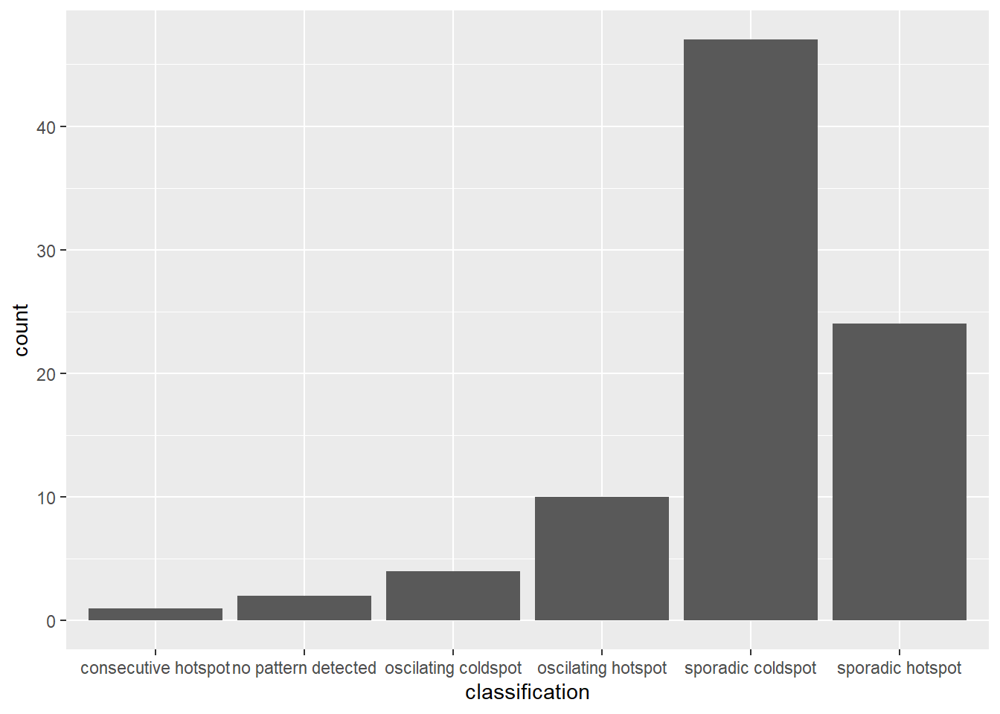
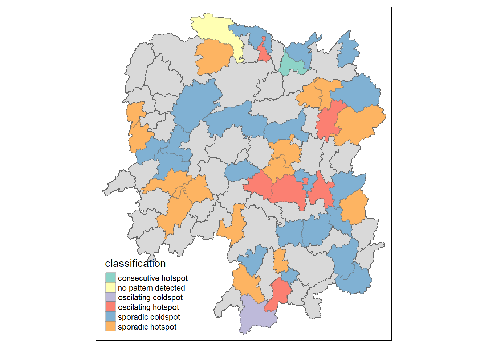

Reading layer `Hunan' from data source
`C:\Users\yozaf\SMUY3S2\Geospatial\IS415-GAA\In-class_Ex\In-class_Ex05\data\geospatial'
using driver `ESRI Shapefile'
Simple feature collection with 88 features and 7 fields
Geometry type: POLYGON
Dimension: XY
Bounding box: xmin: 108.7831 ymin: 24.6342 xmax: 114.2544 ymax: 30.12812
Geodetic CRS: WGS 84In-Class Exercise 5: Emerging Hot Spot Analysis: sfdep methods
Overview
Emerging Hot Spot Analysis (EHSA) is a spatio-temporal analysis method for revealing and describing how hot spot and cold spot areas evolve over time. The analysis consist of four main steps:
- Building a space-time cube,
- Calculating Getis-Ord local Gi* statistic for each bin by using an FDR correction,
- Evaluating these hot and cold spot trends by using Mann-Kendall trend test,
- Categorising each study area location by referring to the resultant trend z-score and p-value 5. for each location with data, and with the hot spot z-score and p-value for each bin.
Packages
We are using sfdep, not spdep
Data
Loading Data
Creating Time Series Cube
In the code chunk below, spacetime() of sfdep is used to create an spatio-temporal cube.
Computing Gi*
First, we will identify the neighbours and derive an inverse distance weight
Rows: 1,496
Columns: 5
$ Year <dbl> 2005, 2005, 2005, 2005, 2005, 2005, 2005, 2005, 2005, 2005, 200…
$ County <chr> "Anxiang", "Hanshou", "Jinshi", "Li", "Linli", "Shimen", "Liuya…
$ GDPPC <dbl> 8184, 6560, 9956, 8394, 8850, 9244, 13406, 11687, 14659, 7423, …
$ nb <list> <1, 2, 3, 4, 57, 85>, <1, 2, 57, 58, 78, 85>, <1, 3, 4, 5, 85>…
$ wt <list> <0.00000000, 0.01526149, 0.03515537, 0.02176677, 0.02836978, 0…Then, we can calculate Gi* by grouping by Year and using local_gstar_perm() of sfdep package. After which, we use unnest() to unnest gi_star column of the newly created gi_starts data.frame.
Mann-Kendall Test
The code chunk will perform Mann-Kendall Test for Changsa county
We can plot the result

# A tibble: 1 × 5
tau sl S D varS
<dbl> <dbl> <dbl> <dbl> <dbl>
1 0.485 0.00742 66 136. 589.To perform Mann-Kendall Test for every location with groupby()
Arrange to Show Significant Emerging Hot/Cold Spots
Performing Emerging Hot Spot Analysis
We can visualize the distribution of EHSA Classes

Visualizing EHSA
First, we need to join EHSA with Hunan
Then, we can plot it with tmap functions
